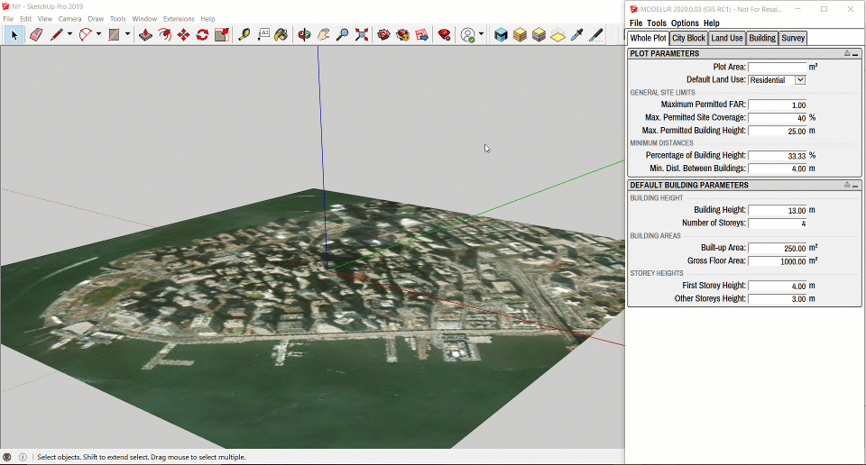

Menu
Menu is the topmost part of Modelur's user interface window (Figure 4.01). It contains four sub-categories: File, Tools, Options and Help, which are explained in detail below.

File¶
Here you can open existing files or export your data.
File → Open
Opens a dialog window that allows you to open existing SKP file.
File → Import GIS Data…
Clicking on this button will bring up GIS import window.
File → Export to GeoJSON…
Clicking on this button will save your Buildings and City Blocks as WGS84 GeoJSON which you can use in GIS software of your choice (eg. QGis, ArcGis, etc.). Files are stored next to your SKP file. They have the same base name as your SKP file and appended buildings##, complex_buildings## and city_blocks## suffixes. Each time you export the data, number identifier is raised by 1.
File → Export Urban Design Control Values…
This is used to export urban control values (such as Gross Floor Area, FAR, Required number of parking lots, etc.) of currently opened model into CSV file. Before exporting the data, you have an option to choose which values you want to export (Whole Plot, Land Uses, Buildings, Complex Buildings). By default all options are selected for export (Figure 4.02).
For Complex Buildings, details about Land Use and/or each Simple Building from which it is constructed can be exported. Just select Export also Land Use data of Complex Buildings and/or Export also Buildings that form Complex Buildings.

Sort Buildings by parameter value in CSV export
In case you have sorted the Buildings by some value in Urban Control Data Table, the order will be preserved when exporting the values to CSV file.
Exported CSV file can then be opened by any major spreadsheet software (eg. Excel, Google Sheets or LibreOffice Calc, Figure 4.03).
Tip: When importing the data, make sure you have semicolon marked as separator sign in the spreadsheet software you are using.

File → Download OSM 3D Buildings
In order to generate Open Street Map (OSM) 3D Building's volumes (Figure 4.04), you first need to geolocate your model using SketchUp's geolocation feature (File -> Geo-location -> Add Location…). Once you have geolocated your model, hitting Download OSM 3D Buildings button will create you building volumes for selected area. The new volumes will be placed into a separate group and placed on separate layer. If you wish to place building's volumes onto the terrain, make sure to select it before triggering download.
In case you would like to create buildings on your own terrain (not one generated by SketchUp), just select it and Modelur will filter the imported building volumes and place it onto it.

Default Building Heights
Note that not all buildings provided by OSM have their height parameter defined. When this is the case, Modelur will take default building parameter from Whole Plot or City Block at the time of creation.
File → Download OSM 2D Urban Morphology
In order to generate OSM 2D Urban Morphology, you first need to geolocate your model using SketchUp's geolocation feature (File -> Geo-location -> Add Location…). Once you have geolocated your model, hitting Download OSM 2D Urban Morphology button will create you floor plans of buildings for selected area. The new floor plans will be placed into a separate group and placed on separate layer.
Tools¶
Here is a set of tools that help you work faster and more efficiently.
Open Urban Control Data Table
This will open a new, interactive Window with the complete urban control data of your model inside SketchUp (Figure 4.04). By clicking on the appropriate checkboxes at the top of this new Window, you can choose which sets of data are displayed (Whole Plot, Land Uses, Buildings, Complex Buildings ...). All values are refreshed in real-time and you can also use this Window to select specific Buildings.

By clicking on a (Complex) Building row in this Window, Modelur will select its counterpart inside the 3D Window. And vice versa - when you select the Building in 3D Window, it will get selected in the data table, too. Rows with selected Buildings are marked with a light blue color (Buildings 1000006 and 1000007 in the image above).
If needed, (Complex) Buildings can also be sorted by their values. Simply click on the name of the column you want to sort by.
For Complex Buildings, details about Land Use and/or each Simple Building from which it is constructed can be shown. Just select Complex Buildings Land Uses and/or Complex Buildings Parts on top of the Window. These options are available for selection only if Complex Building option is selected.
Randomize Building Heights
Using this functionality you can randomize selected Buildings number of storeys. Once Buildings are selected, click on this button and you will be presented with two options. If you select Absolute Number of Storeys all buildings will be randomized to number of storeys between min and max value. If you choose Relative Number of Storeys, selected Building's storeys will be randomized based on their current Number of Storeys in the range between min and max values specified.
This option helps create dynamic urban solutions, avoiding too uniform look of the urban area.
Place Buildings on Selected Terrain
Using this will "drop" all Modelur Buildings to the terrain of your choice. This is particularly useful when working on
sloped terrains and you need the buildings to sit nicely on it. In order to use this functonality, just select the
terrain in question and click this button.
Calculate Form Factor
Form Factor calculation is used to estimate the potential of Building's energy efficiency. The lower the Form Factor, the more compact a Building is. And the more compact a Building is, the lower are the energy losses for a given floor space.
Modelur calculates the Form Factor in two ways that are most commonly used nowadays:
-
Heat Loss Form Factor (FF) is the ratio between the Building's envelope area (EA) and it's Net Floor Area (NFA). Form Factor is calculated as FF = EA / NFA.
Source: NHBC: Foundation Shape and Form
The Heat Loss Form Factor is a number generally between 0.5 and 5, with a lower number indicating a more compact building. Passivhaus buildings aim to achieve 3 or less (source).
-
Surface to Volume Ratio (SVR) is the ratio between the Building's envelope area (EA) and it's volume (V). Surface to Volume Ratio is calculated as SVR = EA / V. Note: The numeric value of Surface to Volume Ratio is dependent on the units (metric or imperial) that are chosen.
The Surface to Volume Ratio for a typical single family house is 0.8 - 1.0 1/m. According to some sources, the recommended Surface to Volume Ratio for a passive house is ≤ 0.8 1/m; according to another source 0.5 1/m (source).
-
Building's envelope area is the sum of areas of external faces of the Building (e.g. walls, roofs, terraces).
Form Factor Calculation is also available through Context menu
You can call Form Factor Calculation also via Context menu. To do so, just right-click on the Building and select Modelur → Calculate Form Factor.
Optimize Buildings for Google Earth
Once your urban design proposal is finished, you might want to export it to geolocated KMZ file, which can be opened by many programs, including Google Earth. Using this feature Modelur will automatically optimize all Modelur Buildings by removing all unnecessary faces. If you want, you can also tell it to export floor Edges, so that the Building's storeys are visible inside Google Earth.
Options¶
Language
Set Modelur to your preferred language. Note that Modelur is officially supported in English only for time being.
Units
Set chosen units, either metric (meters) or imperial (feet). Switching this option will also switch SketchUp's dimension units.
Default Building Shape
When nothing is selected in your model, Modelur can create a Building or Complex Building at model's origin. Here you can set what shape should such default building be (Square, Circle or L-Shape). If you selecte empty value in the dropdown, Modelur will not create new (Complex) Building if there are no proper objects (eg. Face or closed Edge loop) in the selection.
Buildings From Edges
Tell Modelur if and how it should create Buildings or City Blocks when edges are selected. There are three options: Don't Create, From One Edge and From Edge Loop.
Don't Create option means you Modelur will create a Building or City Block only from selected faces, ignoring edge loops. If no face is selected, Modelur will create a Building in the middle of the coordinate system and with Default Building Area (as defined in Default Building Parameters).
From One Edge option means you can select just one edge of a closed loop and a Building or City Block will be created based on that loop. In case you have a loop within a loop and you select an edge of the outer loop, Modelur will create a Building/City Blocks based on the outer loop and ignore the inner loop (since it's edges are not in the selection). If you select edges in both loops, Modelur will create two objects - one in the inner loop and one from outer loop and hole in the position of the inner loop.
From Edge Loop option means you have to select ALL the Edges of a closed loop in order to create Building or City Block. Of no complete edge loop is selected, Modelur will ignore selected edges and create a Building in the middle of the coordinate system and with Default Building Area (as defined in Default Building Parameters) or switch to Line tool so you can draw new City Block.
Calculate FAR Based On
Tell Modelur whether you want to calculate Whole Plot's and City Blocks Floor Area Ratio based on Gross or Net Floor Area of Buildings. By default this option is set to Gross Floor Area.
Relation to Sum of Selected Buildings
Calculate FAR Based On Gross or Net Floor Area preference determines also which value (Gross or Net) is shown when Heads-up Display is showing Sum of Selected Buildings.
Lock City Blocks Upon Creation
Automatically locks City Blocks when they are created. This means a City Block can not be moved around the screen. This way you avoid accidentally moving a City Block and spoiling your project.
If you do need to move a City Block, you can unlock it by right-clicking on the City Block and then selecting Unlock.
Apply City Blocks LU Material
Each City Block will be colored according to it's Land use (if the Land use has a specified color). You can specify a color for each Land Use in Land Use tab.
Synchronize Land Use Panels
Keep Land Use Panels between Input data and Survey tab in sync. This means the Land Use you select in Land Use tab will also become selected (and displayed) in Urban Control - Land Use section of the Survey tab and the other way around.
Show Status Bar
Status Bar is located at the bottom of the User Interface. Status Bar shows short descriptions of Modelur options and functionalities when you hover over them.
Show Building's Built-up Area
Show built-up area face at the bottom of each Modelur Building.
Mark Terraces and Loggias
Apply green color to all Terraces and pink color to all Loggias. This way you can easily see how many Terraces and how many Loggias there are in your project.
Sync Building's Layer
If this option is turned on, Modelur will make sure that all Modelur Building's Entities (Edges and Faces) are placed on the same layer as the Building itself. The same is true for Complex Buildings and City Blocks. By default this option is turned on.
Change Currency Symbol
Opens up a dialog box for specifying new currency symbol. This currency symbol is shown in section Investment calculation of the Land use tab where you define estimated price per square meter for Buildings with the chosen Land Use assigned. This enables Modelur to calculate estimated cost of the whole Building.
Save Default Settings
You can save your preferred settings combination as default by clicking on Save Default Settings. This settings will then be used every time you initialize new Modelur model.
Restore Default Settings
Reset Modelur to default settings. When applied please restart SketchUp and Modelur.
Store Land Use changes
When this option is checked, Modelur will save each Land Use change to temporary Land Use specifications file. Turn this feature on if you want to copy/paste Buildings and City Blocks with non-default Land Uses between different SKP models. The file stored_land_uses.json, is saved into your Modelur Appdata folder.
Help¶
Help section contains links to this User guide, Video tutorials, Modelur website and Modelur forum.
If you want to report a bug or send us a feature request, click on Submit a Ticket.
You can easily check for updates by clicking on Check for Update ....
Enhancements and bugfixes included in your version of Modelur are displayed by clicking on Changelog.